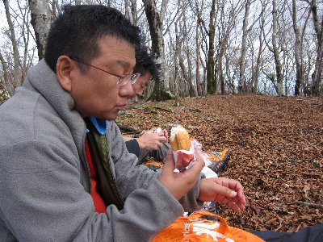
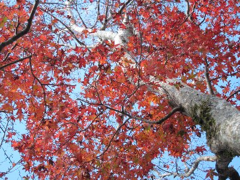

紅葉ハイキング２（三国山稜） | 2011年11月 幹事：べっしー |
|---|---|
| 先月は草津へハイキングに行きましたが、今回はもっと身近にって事で、紅葉を見に三国山稜へ。 三国山稜とは、静岡・山梨・神奈川の３県にまたがる三国山の尾根沿いです。静岡県小山町から、スタート地点となる明神峠まで、ハイキングバスが出てるんです。 本当は、10月下旬が紅葉シーズンらしいのですが、その時期は仕事が忙しく、しかも１週雨で延期して、11月二週目の日曜となってしまいました。 延期したおかげで参加者が減ってしまい、えいさんと、シュガー、私の3名のみ。予定を組んでいた方、申し訳ありません。 | |
 ありゃりゃ〜、枯れてるね〜 |  でも、何カ所かは紅葉が |
| さて、遠くからも富士山に雪が被っているのがわかる秋晴れの11月。この日は折しも、富士スピードウェイ（小山町）でフォーミュラー日本が開催されていまして、高速御殿場ICを降りた途端に車の列！ やばい、１日１本しかないハイキングバスに間に合わない！ 焦る気持ちでチョロチョロ進み、なんとかバスの時間に間に合いました。 車は小山町のふじみセンターへ駐車しました。道路を挟んで向かいに大きめな駐車場あるので、そちらに停めた方が邪魔にならなくていいでしょう。 バスには、僕らのほかに8名程度乗っていまして、全員が明神峠までです。（ハイキングバスだし、停まるバス停それしかないし） 明神峠では、どこからコースに入るのか分からず、少々悩んでいたところに、親切なお姉さんが入り口を教えてくれて事なきを得ました。ここの入り口分かりにくいです。 まずは三国山へ。しばらくは道路に沿うようなコースで、一度道路を横断すると、本格的に登り始めます。 ネットで、三国山への登りが一番きついと情報を得ていたのですが、やはりキツイ！ 残念なことに、木々も枯れ果て紅葉の美しさもありません。所々残っていた、色づき鮮やかなモミジを、これでもかとUPで撮り、心の隙間を埋めておりました。 | |
 と言っても、全体に枯れてます |  景色見えないところで昼食 |
| 左手（南）からは、富士スピードウェイでしょうか、レーシングカーの様なエンジン音が聞こえます。 出発から1時間弱でしょうか、三国山（標高1325m）到着です。木々に覆われ、あまり展望はありません。先ほどまで快晴だった空も、なぜか真上（だけ）に雲が・・・ まあ、それほど気にすることではないでしょう。今日の天気予報は晴れだったし。 三県の境と思われる標識上で、「三県同時制覇」とか遊びながら、次なる目標、大洞山へ進みます。 途中ちらりと山中湖が見えました。もっと展望が良いところが有るだろうと、たいして気にせず進みます。 登っていると、取りあえず暑いね。上着を脱がないと、暑くてたまらない。しかし、止まると涼しい感じ。風が抜けると熱い体が冷やされて心地いいです。 三国山から1時間ほどで大洞山（標高1383m）に到着しました。直ぐに消えてなくなるかと思った頭上の雲が、依然として居座り続けています。不思議なことに、北の山中湖方面、南の富士スピードウェイ方面とも晴れていて、日が当っているのがわかります。なぜか我々の頭上と富士山だけが厚い雲に覆われているんです。 ちょうどお昼になりましたので、ここで昼食にしようとシートを広げ、おにぎり部らしくおにぎりを・・・・って、シュガー、パン食べてるじゃん！ | |
|  誰だ！おにぎり部で パン食べてるのは！ |  富士山見えない(T.T) |
| 座っていると心なしか涼しく・・・いや、寒くなってきまして、フリースは着るわ、手袋はするは、体が震えだすほどです。展望もそれほど良くない山頂で、寒い昼食は、正直拷問のようです。仕方なく食べ終わると直ぐに出発！ まさに昼食時間は15分ほど。 コースは山沿いを西に進みます。寒さを紛らすため、ちょっと急ぎ足で掛け降ります。 地面には葉っぱが積り、サクサクと心地よいです。空は相変わらず曇っていて、日が出る様子はありません。どこかで見えるだろうと思っていた山中湖は、全く見えなくなり、さみしい雰囲気です。 しばらく進むと、アザミ平に出ます。ここは広場のように平坦な場所ですが、木がありません。本来ならここにススキが沢山ある場所らしいのですが、その面影もなく、火山岩らしい岩と砂が有るだけです。 そこからちょっと登って畑尾山へ。ここから登山道をちょっと外れると立山展望台が有るので、行ってみます。本来なら大きな富士山が望めそうですが、雲に隠れて何も見えず。 | |
|  この木は真っ赤 |  台風の影響で |
| ちょっと休憩して、山を降りました。 下りが結構続きます。途中では、台風の影響で崩れた箇所も有りました。斜面がえぐれてる箇所も。 国道138号線まで出たら、今回のハイキングは終了です。コンビニでアイス買って、町営バスで小山町ふじみセンターまで戻ります。（このバスは町内循環バスで無料です。結構長く走るのにね。ありがたいです）この時は14:40発でした。 今回はすでに紅葉も終わっていて、時期としてはイマイチでしたが、あれだけ葉っぱが落ちてるのだから、新緑や紅葉の良い時期は、さぞかし気持ちが良いのではないでしょうか。 帰りのバスも、もう一本後ろの16時台が有るので、それを目指せばもっとゆっくり出来ますよ。 | |
| コメント：べっしー、写真：べっしー＆えい | |